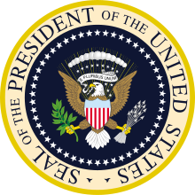
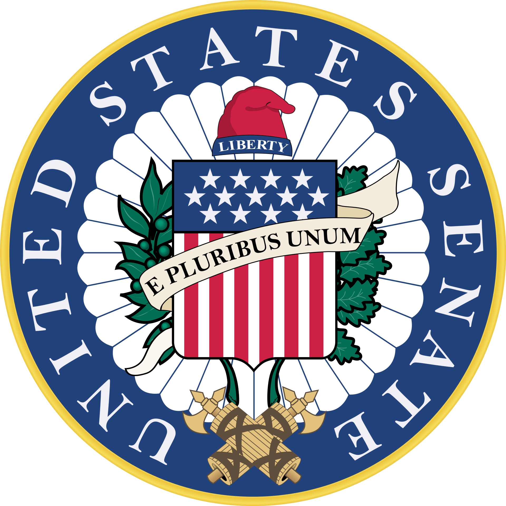

- Situation personnelle
- Etude et carière professionnelle
- Situation personnelle
- Parcours politique
- Ouvrages
- Annexes


Barack Obama /bəˈɹɑːk oʊˈbɑːmə/1, né le 4 août 1961 à Honolulu (Hawaï), est un homme d'État américain. Il est le 44e président des États-Unis, en fonction du 20 janvier 2009 au 20 janvier 2017.
Fils d'un Kényan noir et d'une Américaine blanche du Kansas d’ascendance anglaise et irlandaise, il est élevé durant plusieurs années en Indonésie. Diplômé de l'université Columbia de New York et de la faculté de droit de Harvard, il est, en 1990, le premier Afro-Américain à présider la prestigieuse Harvard Law Review. Après avoir été travailleur social dans les quartiers sud de Chicago durant les années 1980, puis avocat en droit civil à sa sortie de Harvard, il enseigne le droit constitutionnel à l'université de Chicago de 1992 à 2004.
Marié à Michelle Robinson en 1992, Barack Obama entre en politique quatre ans plus tard : il est élu au Sénat de l'Illinois, où il effectue trois mandats, de 1997 à 2004. Il s'oppose à la guerre d'Irak lancée par George W. Bush et se fait connaître au niveau national par le discours qu'il prononce en juillet 2004 lors de la Convention nationale démocrate qui désigne John Kerry comme candidat à la présidence. Après avoir échoué à obtenir l'investiture du Parti démocrate pour la Chambre des représentants en 2000, il est élu au Sénat fédéral en novembre 2004. Il se présente ensuite aux primaires présidentielles démocrates face à Hillary Clinton ; devancé en nombre de voix, il l'emporte avec une légère avance en termes de délégués et devient ainsi le candidat du parti.
Il obtient 52,9 % des voix et 365 grands électeurs à l'élection présidentielle de 2008 contre le républicain John McCain. Il est le premier homme métis ayant des origines africaines à accéder à la présidence des États-Unis. Son parcours a suscité chez les électeurs comme dans les médias du monde entier un grand intérêt. Sa présidence intervient dans un contexte de guerre en Irak, de guerre d'Afghanistan, de crise au Moyen-Orient, d'importante récession de l'économie américaine et de crise financière et économique mondiale. Il est le récipiendaire du Prix Nobel de la paix 2009.
Il promulgue un plan de relance économique, met en place le renouvellement d'autorisation des assurances-chômages et les créations d'emplois, celle sur la protection des patients et des soins abordables ainsi qu'une réforme de la régulation financière en 2010. Dans le domaine de la politique étrangère, il retire progressivement les troupes américaines d'Irak, augmente celles présentes en Afghanistan et signe un traité de contrôle des armements avec la Russie. Il commande également l'opération qui aboutit à la mort d'Oussama ben Laden. En 2011, lors de la guerre civile libyenne, il contribue au renversement de Mouammar Kadhafi. Candidat à sa réélection lors de l'élection présidentielle de 2012, il est opposé au républicain Mitt Romney, qu'il bat avec 332 voix du collège électoral et 51 % des suffrages au niveau national.
Durant son second mandat, Barack Obama tente de promouvoir un contrôle accru des armes à feu et la reconnaissance constitutionnelle réussie du mariage entre personnes du même sexe. En politique extérieure, il ordonne une intervention militaire en Irak et en Syrie contre l'État islamique. Il poursuit le processus de retrait des forces américaines d'Afghanistan. En 2013, il décommande à la dernière minute une opération de représailles contre le régime de Bachar el-Assad, alors que ce dernier utilise des armes chimiques contre la population civile des zones rebelles de Syrie. Il ratifie l'accord de Paris sur le climat, parvient à un accord sur le nucléaire iranien et normalise les relations américaines avec Cuba.